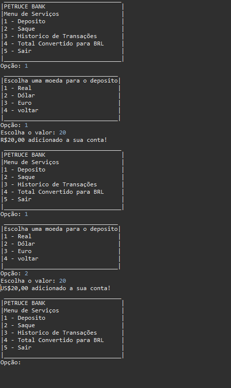
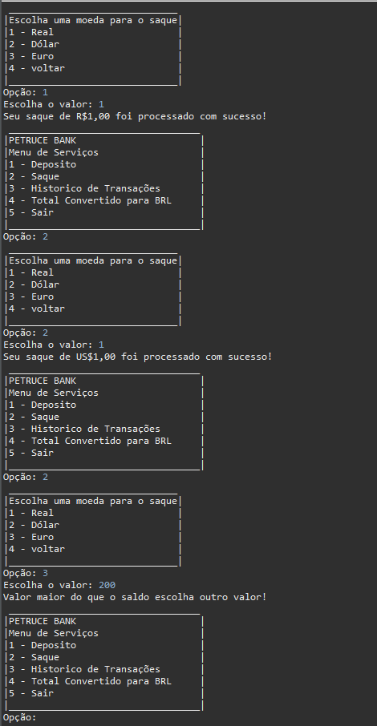
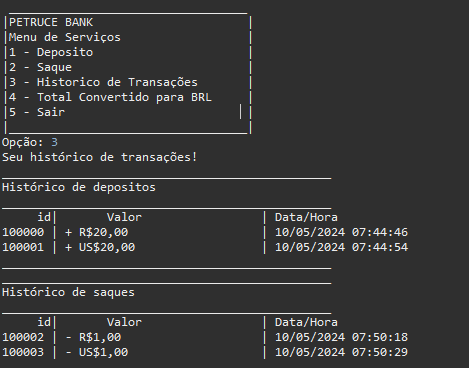
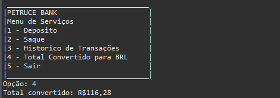

Pequeno software para realizar a aplicação de alguns conceitos obtidos em aulas, onde realizei um trabalho para faculdade de um cofrinho feito em Java, porém depois realizei alterações e implementações para se tornar um sistema de transações
Pequeno software para realizar a aplicação de alguns conceitos obtidos em aulas, onde realizei um trabalho para faculdade de um cofrinho feito em Java, porém depois realizei alterações e implementações para se tornar um sistema de transações
• Função para realizar depositos
• Função para realizar saques
• Função para ver o historico de transações
• Função para ver o saldo total da conta convertido em real
